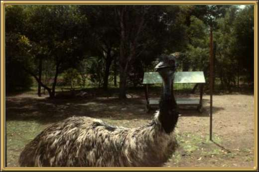

A flightless bird and
basically found throughout Australia, with the exception of Tasmania. My mother
remembers being terrified of the emus as a little girl because they would stalk up and try
to take food from your hands. One even stole a camera! Nowadays they are more difficult to
come so close to.
1.6 to 1.9m (5'2" - 6'2") and up to 45 kilograms (100 lbs)
Females are heavier than males